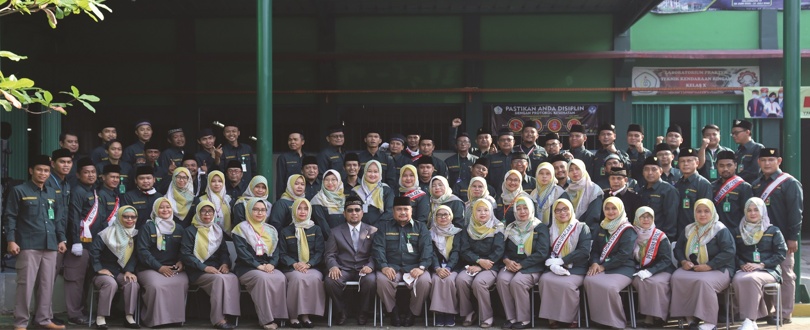

Selamat Datang di Website Pegawai SMK Taruna Bangsa
VISI
Menjadikan siswa SMK Taruna Bangsa Kota Bekasi menjadi manusia yang menugasai teknologi pada masanya dan mentalnya dengan akhlak mulia.
MISI
- Pelaksanaan kegiatan selalu berdasarkan ketuhanan yang Maha Esa.
- Menjadikan lingkungan sekolah sebagai lingkungan wajib disiplin.
- Menciptakan pola santun sesuai kaidah masyarakat.
- Menghargai ide dan kreatifitas seluruh komponen sekolah yang bersifat positif.
- Menyiapkan sarana & prasarana untuk menunjang dalam kegiatan belajar mengajar.